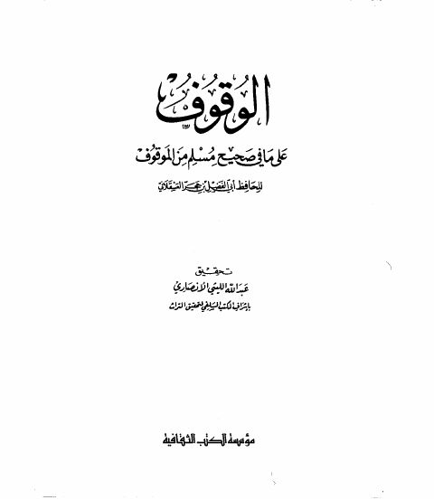

Downloads need an internet connection.
الوقوف على ما في صحيح مسلم من الموقوف- ت. الأنصاري
Authors: أحمد بن علي بن حجر العسقلاني
Editors: عبد الله الليثي الأنصاري
Publishers: مؤسسة الكتب الثقافية
**▫️ العنوان: الوقوف على ما في صحيح مسلم من الموقوف- ت. الأنصاري** ▪️ المؤلف: #أحمد_بن_علي_بن_حجر_العسقلاني ▫️ المحقق: #عبد_الله_الليثي_الانصاري ▪️ الناشر: #مؤسسة_الكتب_الثقافية ▫️ تاريخ النشر: 1406هــ 1986م ▪️ بلد النشر: بيروت، #لبنان ▫️ الطبعة: 1 ▪️ عدد الأجزاء: 1 ▫️ الصفحات: 160 ▪️ نوع الوعاء: #كتاب ▫️ التصنيف الرئيسي: #الحديث_وعلومه ▪️ التصنيف الفرعي: #بحوث_حديثية ۪